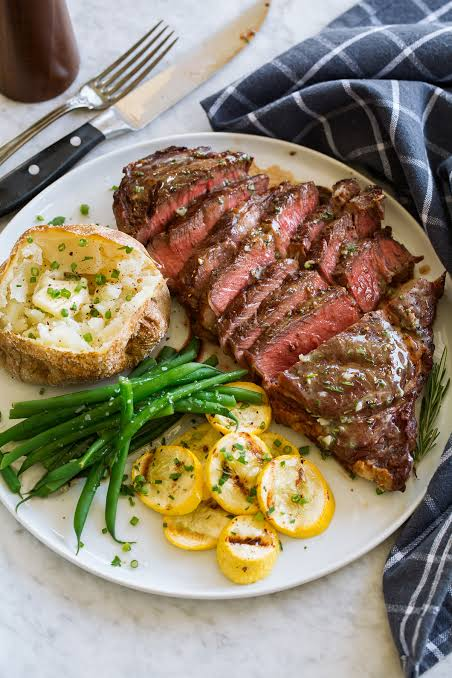

Steak Recipe

Description
This Pan-Seared Steak has a garlic rosemary-infused butter that makes it taste steakhouse quality.
You’ll be impressed at how easy it is to make the perfect steak – seared and caramelized on the outside, and so juicy inside.:
ingredients:
- Ribeye Steak
- Unsalted butter
- Kosher salt
- Garlic
Steps
- Pat dry – use paper towels to pat the steaks dry to get a perfect sear and reduce oil splatter.
- Season generously – just before cooking steaks, sprinkle both sides liberally with salt and pepper.
- Preheat the pan on medium and brush with oil. Using just 1/2 Tbsp oil reduces splatter.
- Sear steaks – add steaks and sear each side 3-4 minutes until a brown crust has formed then use tongs to turn steaks on their sides and sear edges (1 min per edge).
- Add butter and aromatics – melt in butter with quartered garlic cloves and rosemary sprigs. Tilt pan to spoon garlic butter over steaks and cook to your desired doneness (see chart below).
Go Back To Home